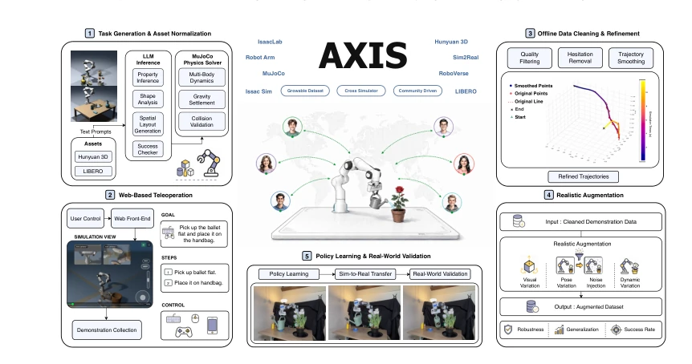
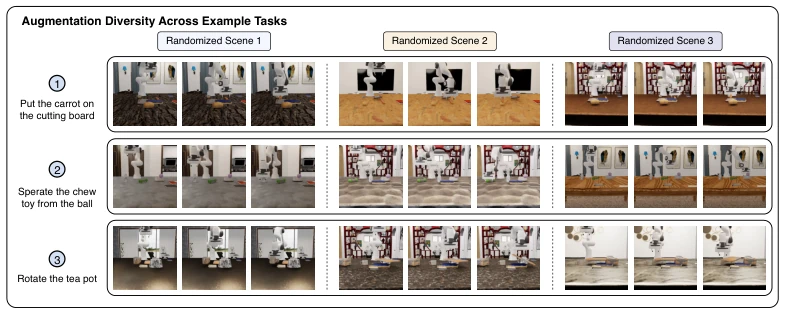
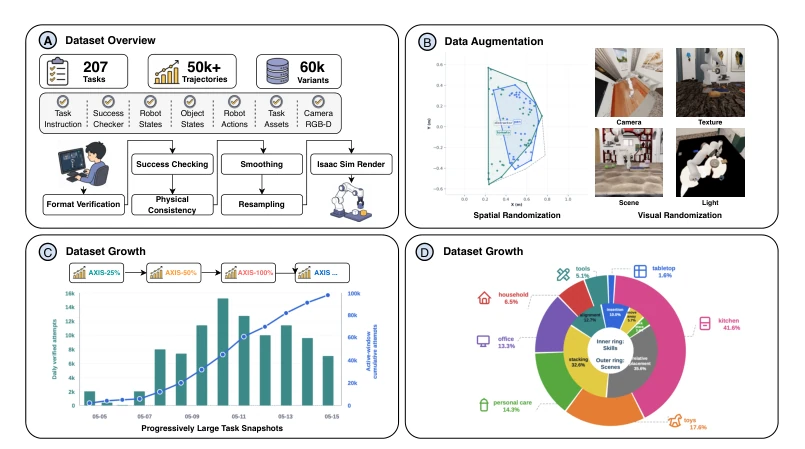
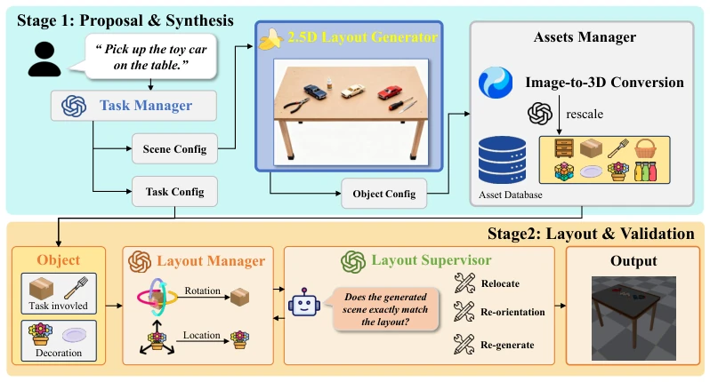
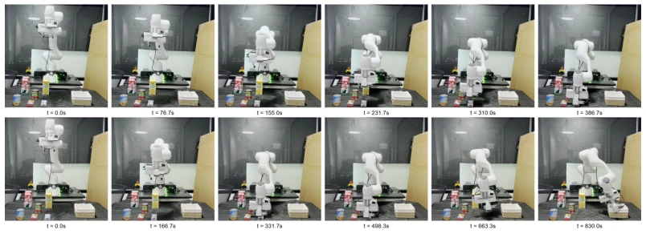
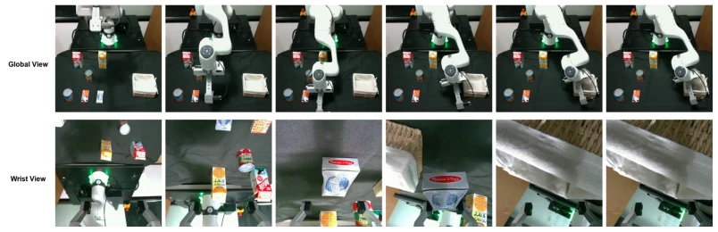
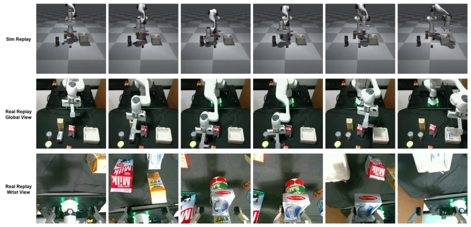

AXIS 这项目名起得挺大，试图把机器人数据收集从手工匠人变成流水线工厂。核心卖点是把社区众包和自动化清洗打包，号称能无限生长。确实，用 Web 端 MuJoCo 做遥操作降低了门槛，这点比那些必须本地装仿真器的强。但别高兴太早，目前还是 Franka 机械臂的桌面操作，离真实世界还有距离。最毒舌的是，虽然号称社区驱动，但数据质量全靠后端算法清洗，如果人类演示太烂，清洗也救不了。而且 Sim-to-Real 依然是个坑，论文里也没给实机验证的实锤，光靠仿真里的鲁棒性提升（比如加噪声）就宣称 scalable，有点纸上谈兵的嫌疑。不过作为基准测试，AXIS 的快照机制确实比静态数据集聪明，能看数据量对模型的影响，至少让 scaling law 在机器人领域有了可量化的实验床。
The project name AXIS is quite ambitious, attempting to transform robot data collection from artisanal craftsmanship to an assembly line factory. The core selling point is packaging community crowdsourcing and automated cleaning, claiming it can grow infinitely. Indeed, using Web-based MuJoCo for teleoperation lowers the threshold, which is superior to those requiring local simulator installation. But don't get too excited too soon; currently it is still desktop operation with Franka manipulators, still a distance from the real world. The most biting criticism is that although claimed to be community-driven, data quality relies entirely on backend algorithm cleaning; if human demonstrations are too poor, cleaning cannot save it. Moreover, Sim-to-Real remains a pit; the paper provides no solid evidence of real-robot validation, merely claiming scalability based on robustness improvements in simulation (e.g., adding noise), which raises suspicions of being mere theoretical talk. However, as a benchmark, AXIS's snapshot mechanism is indeed smarter than static datasets, allowing observation of data volume impact on models, at least providing a quantifiable experimental testbed for scaling laws in the robotics field.
Existing robot manipulation datasets are mostly static collections released once [3, 4], relying on dedicated hardware or centralized expert operation, difficult to expand with model capability iterations. Although crowdsourcing systems already exist [21, 22], they are often limited by physical robot availability [22, 34] or high-fidelity simulator installation costs [35, 36]. Robot learning requires data infrastructure capable of continuously expanding task, object, scene, and contributor dimensions. AXIS aims to solve problems such as closed data collection, offline processing, and fixed benchmarks, building a growable community-driven engine supporting continuous task generation, verification, and evaluation, rather than one-time release. This allows researchers to observe the specific impact of data growth on policy performance, rather than merely comparing static results on different datasets.
AXIS is divided into a three-layer architecture. The infrastructure layer utilizes MuJoCo-WASM to implement browser-side teleoperation, combining LLM and physics solvers to automatically generate task scenarios and success discriminators. The dataset layer converts raw demonstrations into training data, the process includes: unified trajectory format serialization, backend verification based on task checkers, removal of static segments, trajectory smoothing and resampling. Subsequently, visual and physical augmentation (randomizing lighting, texture, object poses, etc.) is performed on the IsaacSim backend. The model layer supports training and evaluation of VLA and imitation learning policies. The core innovation lies in the growable mechanism, data organized by snapshots (25%/50%/100%), keeping the evaluation protocol fixed, only increasing training data volume, facilitating controlled variable research on scalability. This design ensures fair comparison under datasets of different scales, avoiding performance misjudgment caused by changes in evaluation criteria.

Figure 1: AXIS: A growable community-driven data engine unifying task generation, web teleoper- ation, data refinement, realistic augmentation, and policy learning with real-world validation.

Figure 2: Visualization of augmentation diversity for three example tasks. For each task (row), we show three augmented variations (columns) obtained by randomizing appearance, lighting, environ- ment, and initial object positions. Across augmentations, we vary materials and textures (e.g., table, floor, objects), lighting conditions (e.g., brightness and shadows), background and scene layout (e.g., walls, furniture, decorations), and initial states (e.g., object positions and orientations). This process substantially increases data diversity and improves policy robustness to environmental variations.
Experiments compare continuous pretraining of pi_0.5 on AXIS versus the RoboCasa365 baseline. Using the LIBERO-Plus robustness suite for evaluation (including camera, noise, layout, and other perturbations). Results show that AXIS-100% pretraining raises overall success rate to 88.8%, superior to vanilla pi_0.5 (83.9%) and same-scale RoboCasa (57.5%). Data volume increase brings consistent performance growth (25%->50%->100%). Gains are largest on visual and geometric perturbations (e.g., Camera, Sensor Noise), verifying the effectiveness of IsaacSim augmentation. Additionally, AXIS pretraining also shows generalization improvement on language instructions and robot pose variations, indicating data diversity is not limited to explicit augmentation. This indicates that high-quality, diverse simulation data can effectively mitigate distribution shift problems in downstream tasks.

Figure 3: Overview of the AXIS dataset. Validation and refinement. To ensure data quality, all demonstrations undergo a standardized val- idation pipeline that verifies trajectory completeness, task success, and physical consistency. Valid trajectories are subsequently smoothed and resampled to a unified control frequency, improving temporal consistency and reducing teleoperation noise. As shown in Table 1, the refinement process substantially reduces acceleration and jerk while maintaining a high replay success rate. Additional implementation details are provided in the Appendix.
其他图片Other Figures

Figure 4: TaskGen pipeline overview. A language instruction is converted into task, scene, and object specifications; object models are retrieved or generated and normalized; a layout is proposed, instantiated, checked, and deployed.

Figure 5: Real-world Franka rollouts. The first row shows a grasping task, and the second row shows a pick-and-place task. Timestamps indicate elapsed real execution time.

Figure 6: Real-time pick-and-place rollout. The two rows show the global and wrist views.

Figure 7: Pick-and-place replay. The three rows show the simulation replay, real-world global view, and real-world wrist view, respectively.